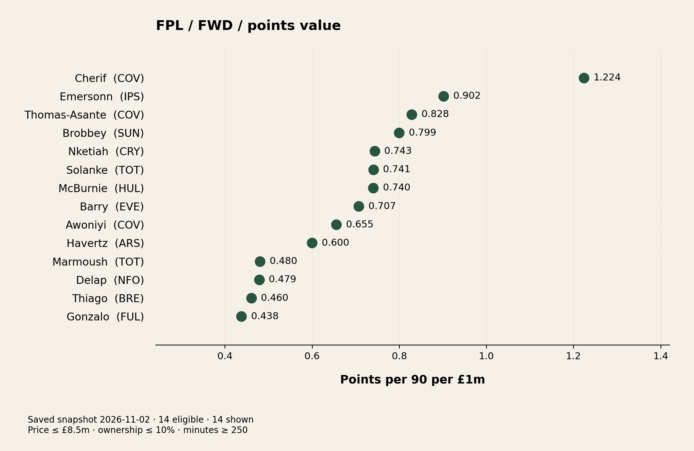
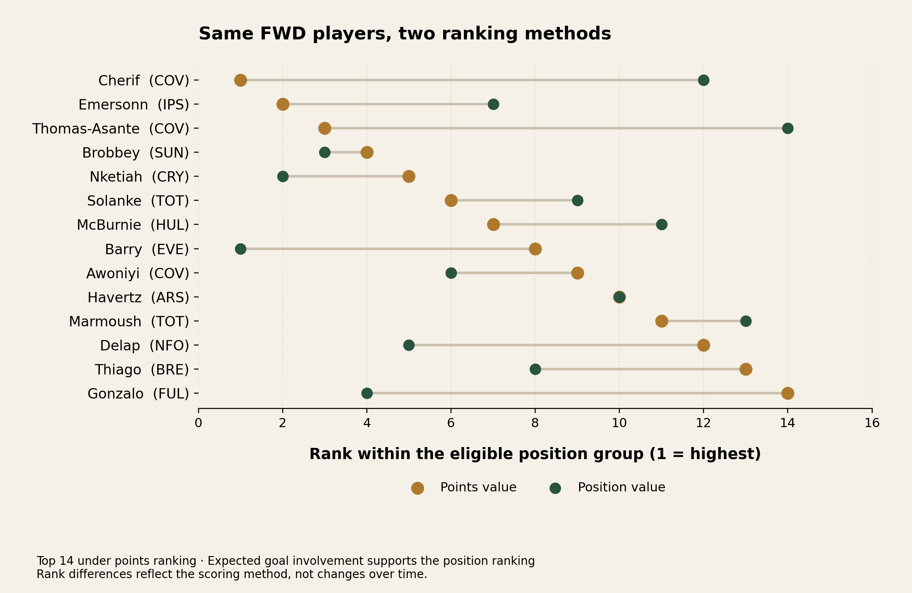
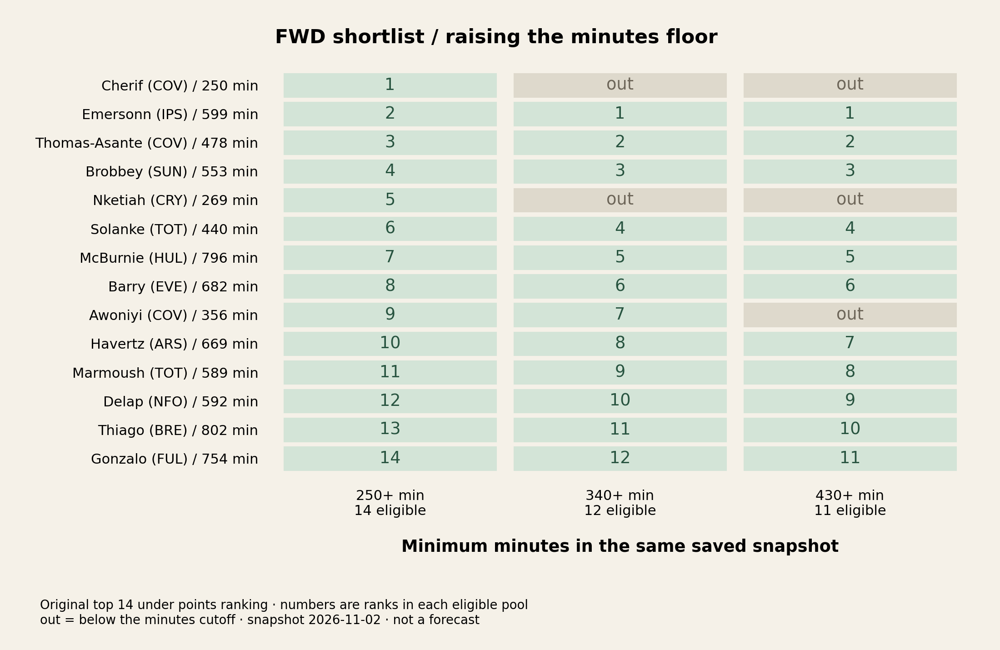
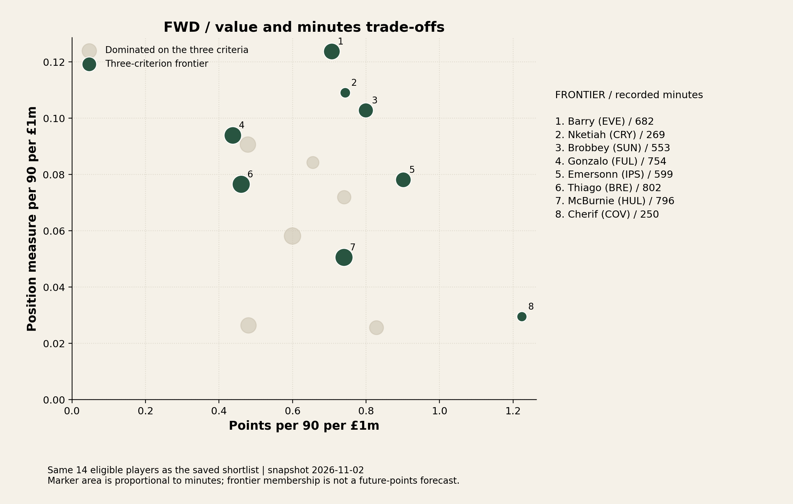

FPL PLAYER VALUE STUDY
Real FPL API response, saved for reproducible offline demonstration. Run download_data.py to update the dataset to current date.
FWD · points ranking · price ≤ £8.5m · ownership ≤ 10% · minutes ≥ 250
Inherited snapshot timestamp: 2026-11-02T00:33:13Z. Eligible players: 14. Frontier members: 8.
| player | club | price | ownership | minutes | points_rank | position_rank |
|---|---|---|---|---|---|---|
| Cherif | COV | 5.0 | 0.5 | 250 | 1 | 12 |
| Emersonn | IPS | 5.5 | 3.2 | 599 | 2 | 7 |
| Thomas-Asante | COV | 5.0 | 1.0 | 478 | 3 | 14 |
| Brobbey | SUN | 5.7 | 5.2 | 553 | 4 | 3 |
| Nketiah | CRY | 5.4 | 0.4 | 269 | 5 | 2 |
| Solanke | TOT | 5.8 | 1.5 | 440 | 6 | 9 |
| McBurnie | HUL | 5.5 | 1.7 | 796 | 7 | 11 |
| Barry | EVE | 5.6 | 7.4 | 682 | 8 | 1 |
| Awoniyi | COV | 5.4 | 0.3 | 356 | 9 | 6 |
| Havertz | ARS | 7.4 | 5.5 | 669 | 10 | 10 |
| Marmoush | TOT | 7.0 | 2.7 | 589 | 11 | 13 |
| Delap | NFO | 5.4 | 1.6 | 592 | 12 | 5 |
| Thiago | BRE | 7.8 | 9.2 | 802 | 13 | 8 |
| Gonzalo | FUL | 6.0 | 4.5 | 754 | 14 | 4 |
Each indicator is divided by minutes, multiplied by 90, then divided by price.

Positive rank improvement means a better position-based rank. Both use one snapshot; this is not change over time.

Scores stay fixed. Only eligibility changes; out means excluded, not a score of zero.

A player is dominated only if another is at least as high on all three criteria and strictly higher on one. The frontier is a set, not a forecast.

| minimum_minutes | eligible_players | shown_players | baseline_top_retained | new_top_entries |
|---|---|---|---|---|
| 250 | 14 | 14 | 14 | 0 |
| 340 | 12 | 12 | 12 | 0 |
| 430 | 11 | 11 | 11 | 0 |
All eligible players · Dominance evidence · Run settings · Reviewer worksheet
Click on above links to export the result CSVs.